包体（源码字节，压缩后才是微信真值）
你给的限：主包 ≤ 2MB，单个分包 ≤ 2MB，合计 ≤ 20MB。仓库门禁里合计写成了 30MB，提审按你这条 20MB 来。下面是未压缩源码。主包源码已经 3415KB，过 2MB；编译压缩后通常会掉一截，但余量薄，发版必须用开发者工具「代码质量 / 包体积」回读，不能拿源码当真。
主包源码 3415KB / 2048KB 上限
| 包 | 源码 | 动作 |
|---|---|---|
| 主包 | 3415KB | 先把只被一个分包用的组件下沉（post-compose 27KB、time-range 14KB 等）。echarts.js 不在主包。 |
| subpackageA | 1125KB | 里面有 echarts.js 994KB，全仓没有 <ec-canvas>。删它，这个分包立刻瘦一截，且不伤主链。 |
| play / publish / merchant / club | 939 / 908 / 918 / 834KB | 源码都没到 2MB。壳页、死组件删了会再瘦。 |
| 全部分包源码合计 | 约 6.8MB + 主包 3.4MB | 源码合计远低于 20MB。卡点是主包 2MB，不是总包。 |
才需要新页面（极少）
大多数缺口是改现页或删入口。只有你决定「这个能力要上」才新开路由。
| 项 | 为什么像新页 | 其实也可以 | 牵连 |
|---|---|---|---|
| 新页或删行 装修「用户照片 · 探索记录」 | 现页只有占位行，没有相册/足迹产品面。 | 审核前最快：删这一行。要做才新开相册页 + 接口。 | 公开商家主页、漫游足迹。没有后端相册接口就不要做。 |
| 新页或永远不上 IP 世界 / 积分商城 / 创作者申请 | 后端有，小程序页已退役或从未做。 | 提审不要出现入口。创作者申请页进过仓后又删了。 | 原生 App 也不该从这里抄。会费明确不做。 |
直接能做（现页改，不必新路由）
| 项 | 做什么 | 牵连 |
|---|---|---|
| 做 导演台已结束 → 结算 | 「查看结算报告」现在 toast 即将开放。改成跳已有 club/settlement，带 clubId。缺场次 id 改文案「还没有场次」，不要说即将开放。 |
结算页本身已通。快速提现仍关，按钮文案用「提现到银行卡」。牵连 clubId / activityId 透传。 |
| 做 已发布活动改内容 | 没有 /api/activity/update。复用 pages/publish/activity 回填 + 后端 update（归属+再审）。或发布后编辑按钮直接拿掉，只留上下架。 |
后台 PUT 已能改。App 删除有资金闸，后台删除还没有（#1064 未进这棵树）。 |
| 做 设置/资料再绑手机 | 把首页 getPhoneNumber 按钮拷到资料或设置。#1066 只修「操作失败」文案，没加入口。 |
微信 getPhoneNumber 付费、真机、错误码 80058。报名页读本地 phone。 |
| 做或删图标 广场完整发帖附件 | 弹窗里图/地点/活动三枚是 toast 桩。行内快贴已经能传图。审核前：要么接选图（要预览区），要么删掉三枚图标。 | #1057 社区帖后端不合也不治这个。到期日写到 2026-12-01，提审等不了。 |
| 做 搜索筛选空转 | 结果页把日期/价格带进 query 并真正过滤，或删掉无效筛选项。 | 只动 search2 两页。 |
| 做 IM 清空聊天 | 走服务端删，或拿掉「清空」按钮。现在 setData 空数组，轮询会拉回来。 | IM 本身是完整产品，不要关整条。 |
| 做 漫游 GO 读选中主题 | goStart 读 introCards[introCardIdx]。 |
只动 roam/index.js。 |
| 做 圈层邀请码 | play 页读 inviteCode，复用 circle 里那套加入逻辑。 |
circle 已转发参数。不修则旧分享链加人失败。 |
| 做 附近的局断网 | fail 走错误面，不要 loaded:true 看起来像没局。 |
只动 nearby。 |
| 删死代码 echarts 994KB | 从 subpackageA 摘掉 echarts + ec-canvas。零实例。 | 包体。无产品牵连。 |
要你拍板：删入口，还是做成真功能
这些现在都露在界面上。留着过不了「功能可用」。没有未合并成品能直接合进来救命。
| 项 | 现状 | 建议默认 | 牵连 |
|---|---|---|---|
| 拍板 声音与触感 | 设置里一整页「暂未接入」（见下图）。 | 删设置这一行。做声音要接 wx 音频/振动，工作量不小。 | 设置列表、scene 半屏。无后端。 |
| 拍板 门店 NPC 对话 | 玩法页能点开，接口默认关。用户会聊到被拒。 | 提审前藏入口，或开 flag 并保证有人设。#1026–1029 商家自助配 NPC 还没合。 | 合规（漫游自由聊写死关，别跟门店混）。STT 语音另闸。 |
| 拍板 通关附近路线 / drops | flag 默认关。掉落卡（徽章/券）是活的，别和 drops flag 混。 | 保持关且界面不出现「推荐附近」入口。 | finishNearbyRoute 只 play 通关。 |
| 拍板 角色「可见客户手机号」 | 写死「否」。 | 删这一行。等客户系统字段再加。 | 角色分配 API 是通的。 |
| 拍板 成长榜「暂未开放」 | 接口存在，404 被写成产品态。 | 改成「加载失败可重试」，或确认生产真有 leaderboard。 | 成长中心。 |
拍板 AI 简易发布 publish/simple |
真页，站内几乎没入口（见下图）。 | 要么从发布 sheet 挂上并测通，要么摘路由。留着审核员深链能进。 | AI 配额、身份闸。 |
拍板 旧搜索 talent/search |
已被 search2 取代，仍注册，能搜出用户列表。 | 删路由。两套搜索 = 审核员看到残页。 | 旧分享链会 404，可接受。 |
| 拍板 壳页 topicadd / workbench / circle / merchant/profile / withdraw/records | 会跳走。circle 无参会停在错误态（见下图）。 | 保留到 2026-10 的 topicadd 按注释到期删。其余深链壳可留，但错误态文案不要像半成品。circle 死代码可清。 | 微信收藏/旧分享。删路由前确认没有线上码。 |
| 拍板 未挂上的俱乐部弹窗组件 | merchants/settings/groupcode/onboarding、publish-sheet 零引用。 | 删组件减主包，或接到 topic-detail。详情页已经自己写了商家/成员/团码。 | 主包体积。登记表注释过时。 |
| 不做 会费 / 微信零钱快速提现 / 漫游 NPC 自由聊 | 关或写死关。界面不应出现入口。 | 会费已删页。快速提现不要做入口。自由聊合规硬关。 | 银行卡提现是通的，别一起关。 |
模拟器实拍（微信开发者工具，2026-09-12）
未登录模拟器。壳页验证的是「跳到哪 / 缺参长什么样」，不是生产数据。
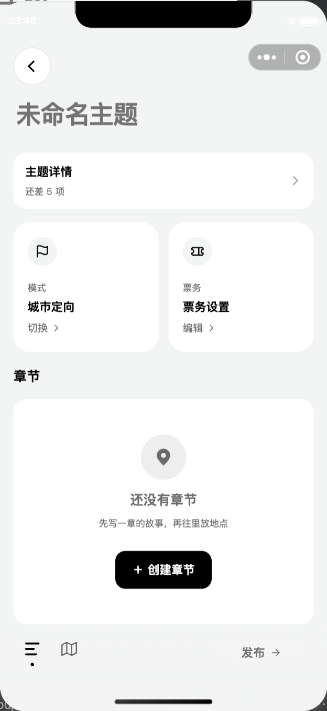
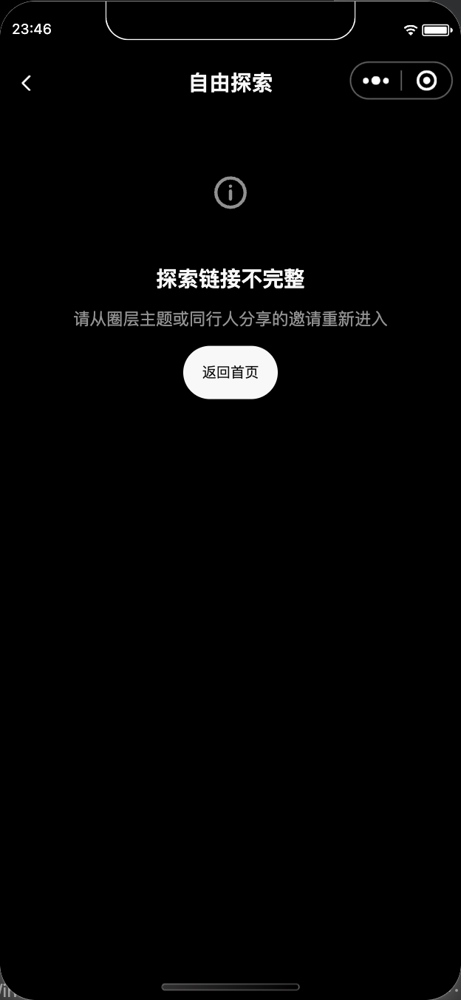
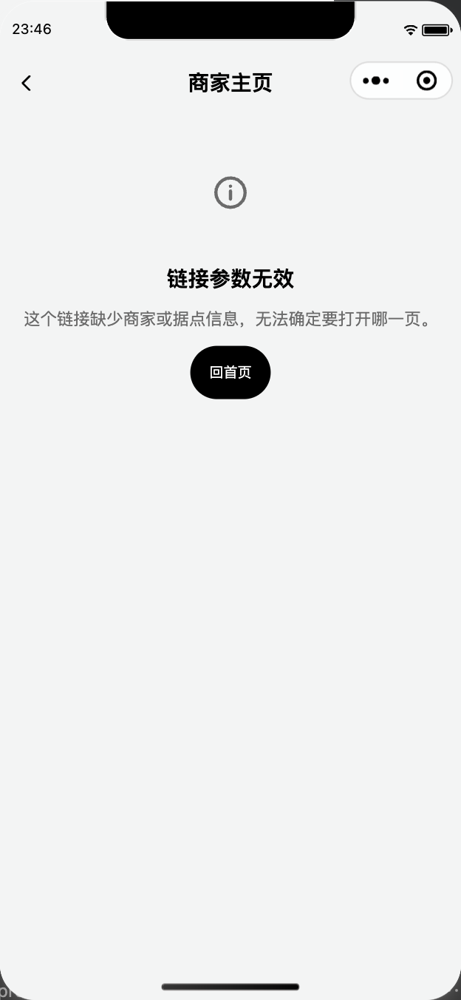
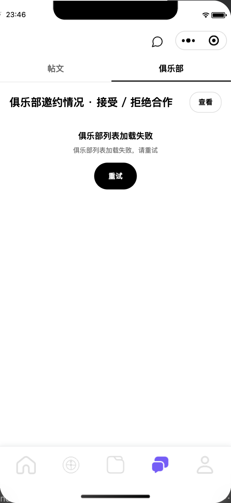
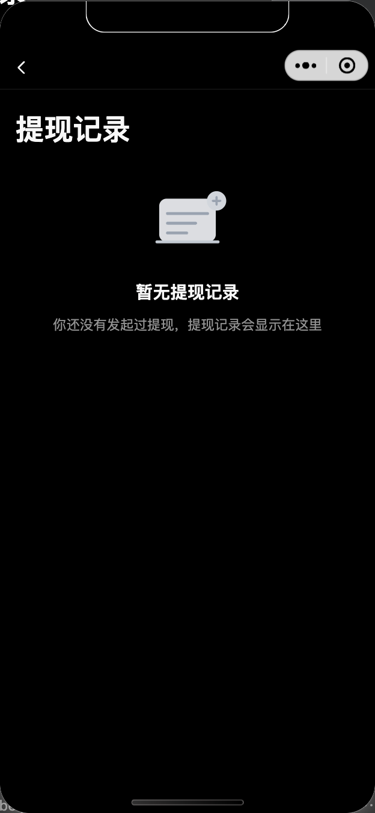
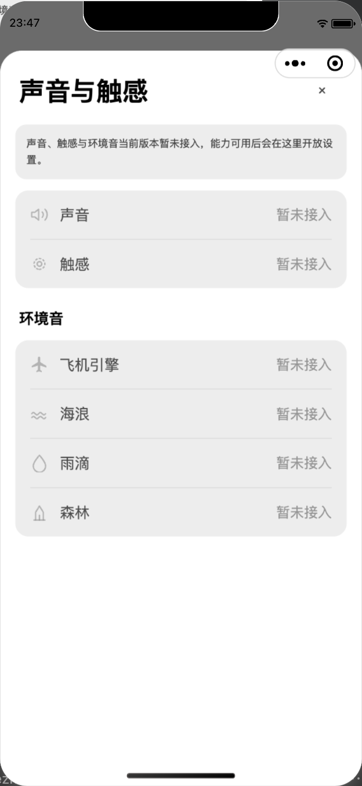
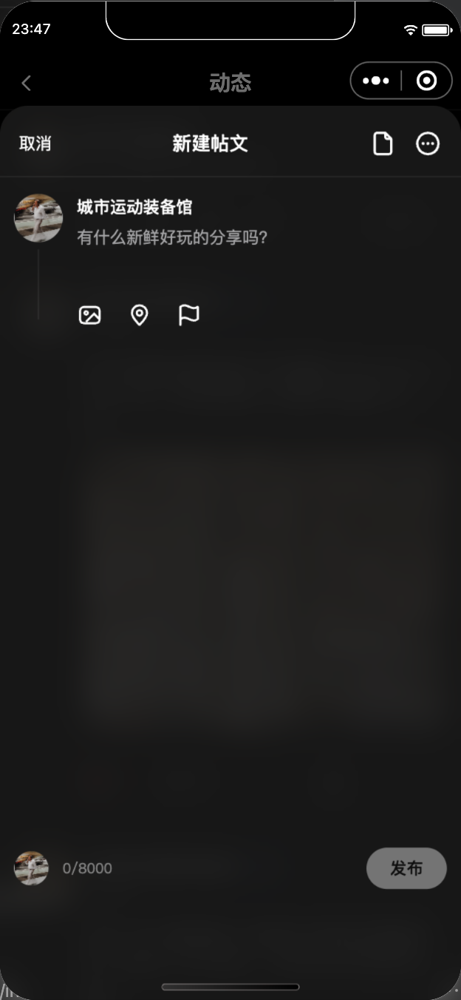
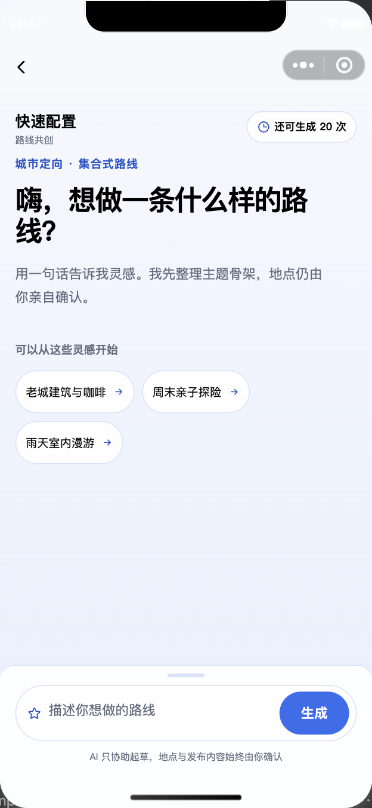
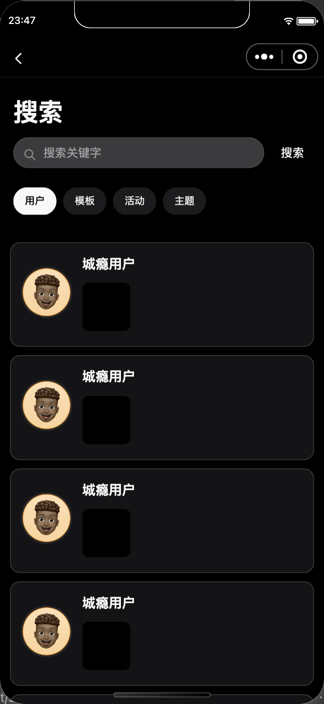
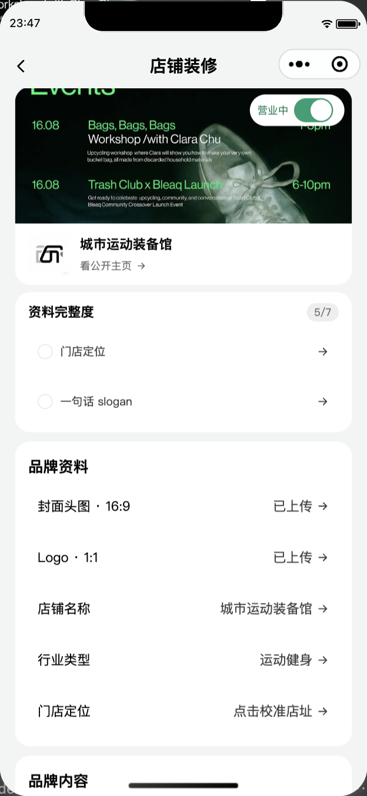
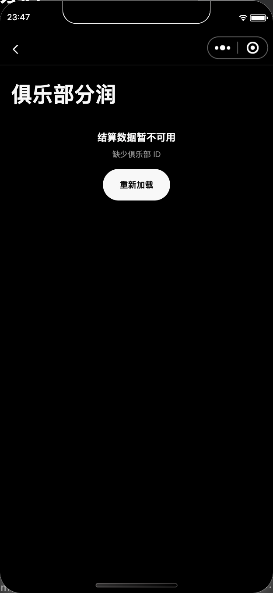
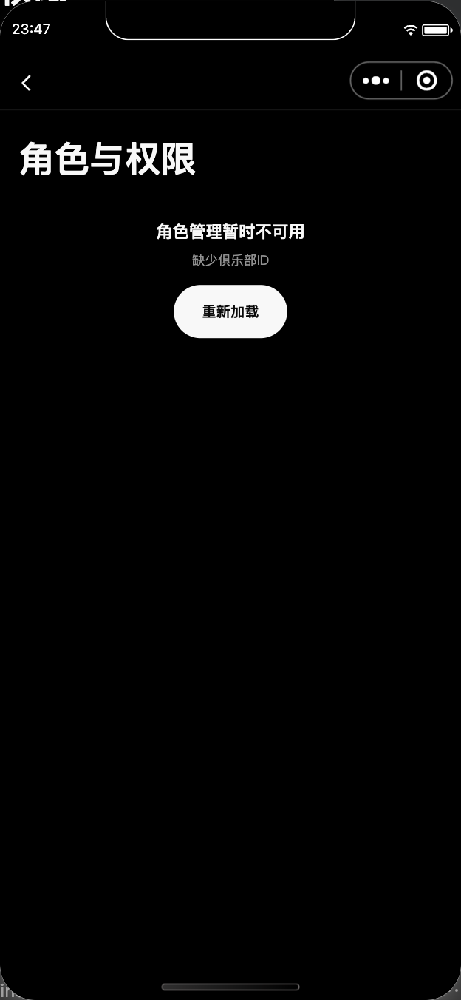
建议提审前最小集
- 所有「即将开放 / 暂未接入 / 还没做好」：做完或删入口（声音触感、装修占位行、发帖三图标、导演台缺 id 文案）。
- 删 echarts；确认主包编译后 ≤ 2MB。
- 搜索筛选、IM 清空、漫游 GO、邀请码：断链，审核员不一定点到，但都是真 bug。
- 门店 NPC、会费、快速提现、IP 世界：界面上不许出现关着的入口。
- 壳页可留 redirect，circle/profile 缺参错误态可以留（这是可用状态，不是占位）。